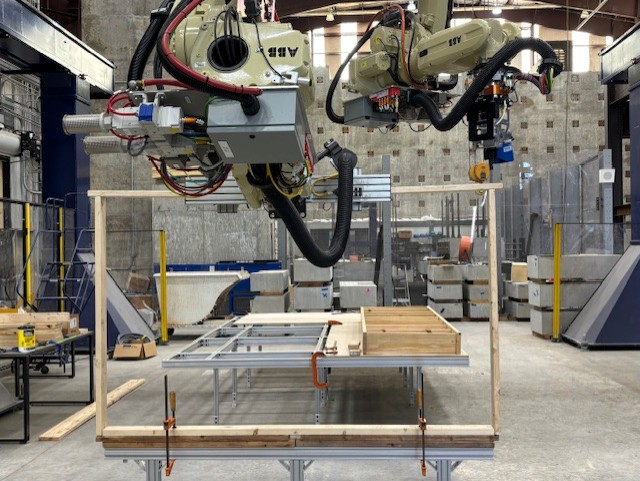
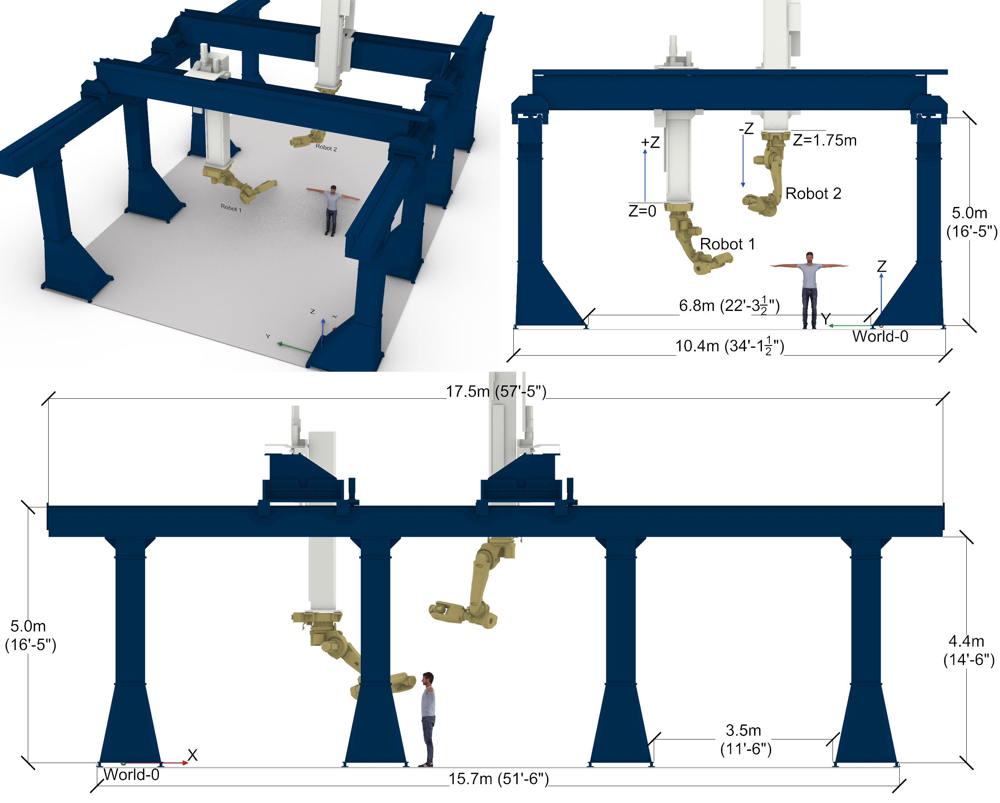
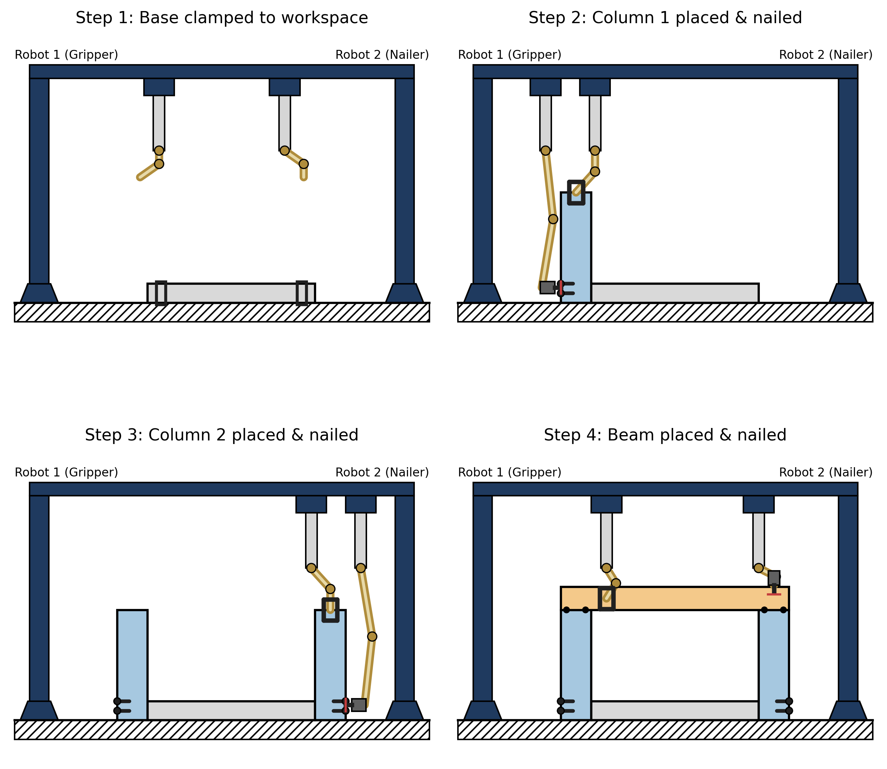

Motion Planning for Collaborative Construction Robotics
06/2026 – 09/2026 · Research
Contributors
Chisung Kim, John D'Amato, Edvard Bruun, Frank Dellaert
Overview/Motivation
This project developed a framework for online motion planning and estimation for an 18 DoF system consisting of two robot arms which held a gripper and a nail gun. We performed optimization on a single factor graph using a combination of concrete and learned constraints (factors). It built on prior work on Simultaneous Trajectory Estimation and Planning (STEAP), and we demonstrated the capabilities of our method by building a post-and-lintel, as shown in the figure here.
Results/Contributions
- We demonstrated feasible online replanning and estimation in a high-dimensional and tightly-constrained workspace, building a post-and-lintel using two robots.
- We utilized a single factor graph to plan trajectories around obstacles and self-collision constraints, combining it with a learned cable-deformation constraint and measurement updates.
- Collaboration with the Bruun Automation Research Group in Georgia Tech College of Civil and Environmental Engineering
Relevant Links
[paper]

Complete Post-and-Lintel

Robot Description

Assembly Sequencing